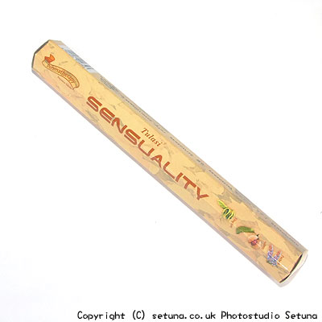

イランイラン、ナツメグ、パチュウリの３種類の香油から作られているお香です。
そのまま嗅ぐと家具屋さんへ行った時の匂い、杉のような爽やかな匂いがします。
火を点けるとナツメグの香り、パチュウリの土っぽさ、イランイランの独特の香りがゆっくりと立ちのぼってきます。
時間が経つにつれて、香りは一つにまとまり、全体的に「イランイラン」の精油によく似た香りになってきます。
ローズマリーや、シダーウッドにも似通った独特なイランイランの清涼感を上手に再現しており、感心させられます。
ナツメグが中低層に強めに感じる事がありますので、狭い部屋だとそちらの方が勝ってきます。
和室だとナツメグのスパイシーなお香、洋室だとイランイランの清涼感のあるお香、といった所でしょう。
私自身はイランイランが好きなので洋室派ですね。
焚く部屋のサイズによって感じる香りが変化するので面白いお香です。
